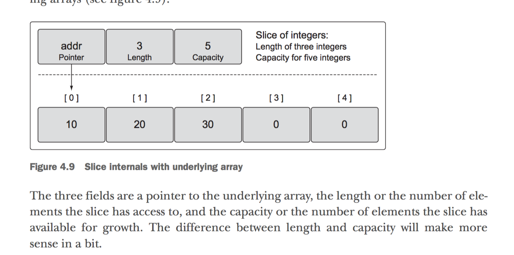
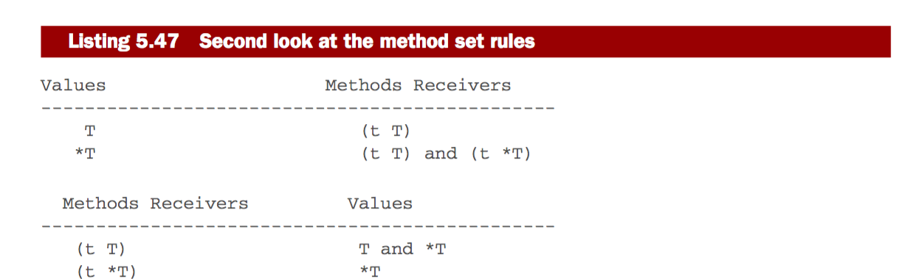
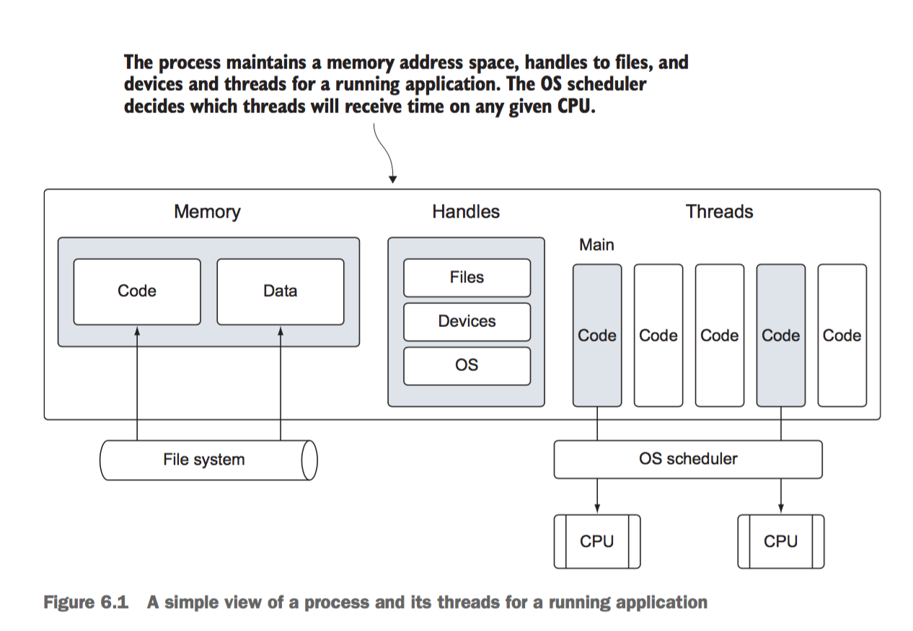
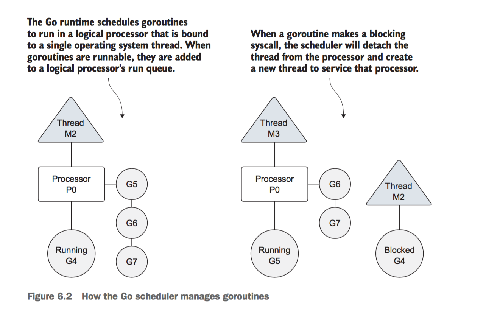
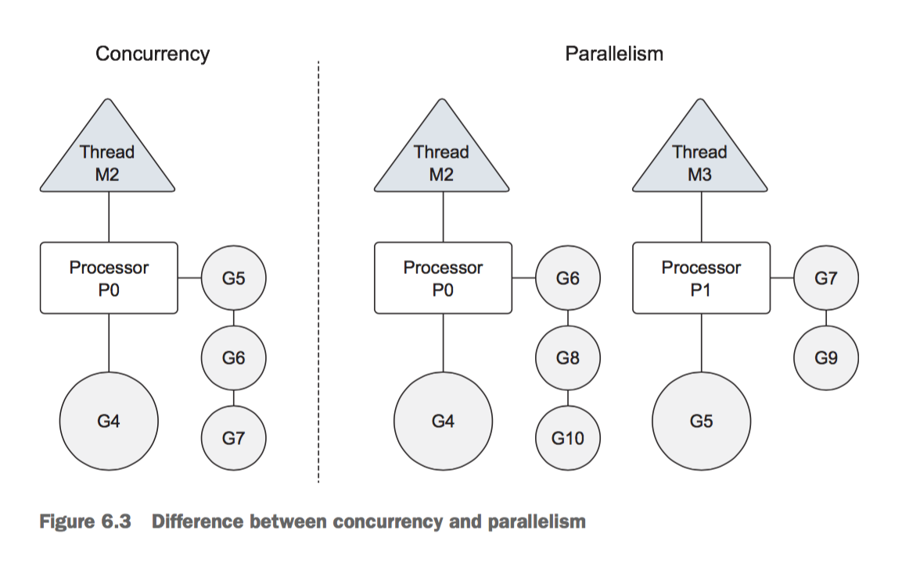

Go in Action 不完全阅读笔记
最近为了了解Go语言，翻阅了Go in Action大部分内容，这里做个阅读笔记，内容大部分取自原书。
Table of Contents
1 packaging and tooling
- 文件头的"package main" 告诉编译器这是一个command(可执行文件), 如果是"package othername"之类的，告诉编译器这是一个package
- go compilers寻找import的package的优先顺序是先找go安装的路径，然后再找GOPATH
1.1 package
import 可以从remote import, 比如:
import "github.com/spf13/viper"
import时取别名:
import ( "fmt" myfmt "mylib/fmt" )
当导入的包不用时，编译器会停止编译且报错，这是开发团队故意的一个特性；当有需要导入而不使用的情况下使用"_"操作符
包的"init"方法可以用来定义在main方法之前执行的方法
1.2 tool
go build go get go clean go run (both builds and run) go vet (简单语法检查) go format (格式化代码) go doc {package-name} (terminal中查看本地文档) godoc -http=:6060 (本地搭建一个web服务器，可以在浏览器中查看文档，包括标准库和GOPATH中的)
依赖管理工具:
- gedep
- gb
2 Arrays,slices, and maps
2.1 Array
2.1.1 声明和初始化数组
创建数组时要确定类型和长度，一旦创建好不能再改，如果需要变动长度，就得新建一个的数组，把需要的元素复制过去
// declare an integer array of five elements var array [5]int //采用字面量创建数组 array :=[5]int{10, 20, 30, 40, 50} // 使用...时会根据初始化的元素数量觉得数组长度 array := [...]int{10, 20, 30, 40, 50} // 指定第一个和第二个元素， 其它元素用0填充 array := [5]int{1: 10, 2: 20} // 定义一个数组，元素是指向整形的指针，初始化前两个指针（后面的为nil指针） //Declare an integer pointer array of five elements. // Initialize index 0 and 1 of the array with integer pointers. array := [5]*int{0: new(int), 1: new(int)} // Assign values to index 0 and 1. *array[0] = 10 *array[1] = 20 // 相同类型的数组直接赋值 // Declare a string array of five elements. var array1 [5]string // Declare a second string array of five elements. // Initialize the array with colors. array2 := [5]string{"Red", "Blue", "Green", "Yellow", "Pink"} // Copy the values from array2 into array1. array1 = array2 // 当赋值的数组时指针数组时，复制的是指针的值，不是指向的元素 // Declare a string pointer array of three elements. var array1 [3]*string // Declare a second string pointer array of three elements. // Initialize the array with string pointers. array2 := [3]*string{new(string), new(string), new(string)} // Add colors to each element *array2[0] = "Red" *array2[1] = "Blue" *array2[2] = "Green" // Copy the values from array2 into array1. array1 = array2 //参见下面图片: [[file:static/images/go-goinaction-ch3.png]] // 声明和初始化多维数组 // Declare a two dimensional integer array of four elements // by two elements. var array [4][2]int // Use an array literal to declare and initialize a two // dimensional integer array. array := [4][2]int{{10, 11}, {20, 21}, {30, 31}, {40, 41}} // Declare and initialize index 1 and 3 of the outer array. array := [4][2]int{1: {20, 21}, 3: {40, 41}} // Declare and initialize individual elements of the outer // and inner array. array := [4][2]int{1: {0: 20}, 3: {1: 41}} // 多维数组间也可以赋值，只要他们长度和类型相同
2.1.2 做参数传递时考虑传递数组的地址
// Allocate an array of 8 megabytes. var array [1e6]int // Pass the address of the array to the function foo. foo(&array) // Function foo accepts a pointer to an array of one million integers. func foo(array *[1e6]int) { ... }
2.2 Slice
Slice类似python里的列表，是可变的数组。Slice的底层是用array实现的。包含3部分信息,参见下图:  包括指向底层数组的指针、slice可使用的长度、底层数组的总长度
2.2.1 创建slice
/* 1. 使用make */ // Create a slice of strings. // Contains a length and capacity of 5 elements. slice := make([]string, 5) // Create a slice of integers. // Contains a length of 3 and has a capacity of 5 elements. slice := make([]int, 3, 5) /* 2. 使用字面量 */ // Create a slice of strings. // Contains a length and capacity of 5 elements. slice := []string{"Red", "Blue", "Green", "Yellow", "Pink"} / Create a slice of integers. // Contains a length and capacity of 3 elements. slice := []int{10, 20, 30} // Create a slice of strings. // Initialize the 100th element with an empty string. slice := []string{99: ""} /* 3. WTF 使用字面量时指定长度就是创建数组，不指定就是创建slice*/ // Create an array of three integers. array := [3]int{10, 20, 30} // Create a slice of integers with a length and capacity of three. slice := []int{10, 20, 30} /* 4 nil and empty slice */ // Create a nil slice of integers. var slice []int // Use make to create an empty slice of integers. slice := make([]int, 0) // Use a slice literal to create an empty slice of integers. slice := []int{}
2.2.2 操作slice的方法
/* 1. slice切片 */ // Create a slice of integers. // Contains a length and capacity of 5 elements. slice := []int{10, 20, 30, 40, 50} / Create a new slice. newSlice := slice[1:3] 结果参见图片: [[file:static/images/go-goincation-ch4-02.png]] /* 2 */ slice的length以内是可被访问的，capacity长度是用来增长的 /* 3 使用append给slice添加元素*/ // Create a slice of integers. // Contains a length and capacity of 5 elements. slice := []int{10, 20, 30, 40, 50} // Create a new slice. // Contains a length of 2 and capacity of 4 elements. newSlice := slice[1:3] // Allocate a new element from capacity. // Assign the value of 60 to the new element. newSlice = append(newSlice, 60) 模型图如下: [[file:static/images/go-goinaction-ch4-04.png]] 当底层数组长度不够时，会新建一个更大的数组替换它，把原来的元素复制过来 增加的算法（可能会改变）是：当长度1000以内时每次增长1倍，超过1000后，每次增长25% /* 4. 当给一个切片添加元素时，会改变底层数组，如果当两个切片共享同一底层数组时，势必会相互影响 可以采用一种模式来避免这种互相影响 */ // Create a slice of strings. // Contains a length and capacity of 5 elements. source := []string{"Apple", "Orange", "Plum", "Banana", "Grape"} // Slice the third element and restrict the capacity. // Contains a length and capacity of 1 element. slice := source[2:3:3] // Append a new string to the slice. slice = append(slice, "Kiwi") 如图: [[file:static/images/go-goinaction-ch4-05.png]] 切片的时候，指定低3个元素和第二个一样，这样得到的切片是容量和长度一样的，这种情况下新切片上append新元素的话 因为底层容量不够，会新创建一个底层数组，把元素复制过去，和之前的切片底层数组就可以隔离开了。 /* 5. appendke接受多个元素， 使用...表示所有元素 */ // Create two slices each initialized with two integers. s1 := []int{1, 2} s2 := []int{3, 4} // Append the two slices together and display the results. fmt.Printf("%v\n", append(s1, s2...)) Output: [1 2 3 4] /* 6. 遍历slice */ // 可用range配合for // Create a slice of integers. // Contains a length and capacity of 4 elements. slice := []int{10, 20, 30, 40} // Iterate over each element and display each value. for index, value := range slice { fmt.Printf("Index: %d Value: %d\n", index, value) } Output: Index: 0 Value: 10 Index: 1 Value: 20 Index: 2 Value: 30 Index: 3 Value: 40 要注意的是，循环里的index 是索引位置，value是slice元素值的copy.而不是指向元素的地址， 看下面的例子 // Create a slice of integers. // Contains a length and capacity of 4 elements. slice := []int{10, 20, 30, 40} // Iterate over each element and display the value and addresses. for index, value := range slice { fmt.Printf("Value: %d Value-Addr: %X ElemAddr: %X\n", value, &value, &slice[index]) } Output: Value: 10 Value-Addr: 10500168 ElemAddr: 1052E100 Value: 20 Value-Addr: 10500168 ElemAddr: 1052E104 Value: 30 Value-Addr: 10500168 ElemAddr: 1052E108 Value: 40 Value-Addr: 10500168 ElemAddr: 1052E10C // 通常的for循环遍 遍历切片，可以控制起始位置等 // Create a slice of integers. // Contains a length and capacity of 4 elements. slice := []int{10, 20, 30, 40} // Iterate over each element starting at element 3. for index := 2; index < len(slice); index++ { fmt.Printf("Index: %d Value: %d\n", index, slice[index]) } Output: Index: 2 Value: 30 Index: 3 Value: 40 /* 7. 多维切片 */ // Create a slice of a slice of integers. slice := [][]int{{10}, {100, 200}} 底层构造: [[file:static/images/go-goinaction-ch4-07.png]] // 同样使用append的结果 // Create a slice of a slice of integers. slice := [][]int{{10}, {100, 200}} // Append the value of 20 to the first slice of integers. slice[0] = append(slice[0], 20) 底层构造: [[file:static/images/go-goinaction-ch4-08.png]] /* 8. 切片作为函数参数值，直接传递就好 因为切片本身是由3部分组成: 一个addr, 一个length, 一个 Capacity， 在64-bit架构上，每个部分各需8bytes，总共24bytes, 传递给函数是没问题的 */
2.3 Map
2.3.1 底层实现
没看太懂:(, 需要了解下一般哈希表怎么实现的
2.3.2 创建和初始化
/* 使用make 或者 字面量创建 */ // Create a map with a key of type string and a value of type int. dict := make(map[string]int) // Create a map with a key and value of type string. // Initialize the map with 2 key/value pairs. dict := map[string]string{"Red": "#da1337", "Orange": "#e95a22"} /* map的key只用能用 == 操作符比较即可。 切片，函数，struct type that contains slice 不能用作map keys, 作value没问题 */ // Create a map using a slice of strings as the key. dict := map[[]string]int{} Compiler Exception: invalid map key type []string // Create a map using a slice of strings as the value. dict := map[int][]string{}
2.3.3 操作map
/* 1. 赋值方法和python类似 */ // Create an empty map to store colors and their color codes. colors := map[string]string{} // Add the Red color code to the map. colors["Red"] = "#da1337" /* 2. nil map 赋值的时候会报运行时错误 */ // Create a nil map by just declaring the map. var colors map[string]string // Add the Red color code to the map. colors["Red"] = "#da1337" Runtime Error: panic: runtime error: assignment to entry in nil map /* 3. 从map 取值时， 会返回两个值，第一个是值，第二个是表示存不存在*/ // Retrieve the value for the key "Blue". value, exists := colors["Blue"] // Did this key exist? if exists { fmt.Println(value) } /* 4. 当然也可以直接根据但回到值是不是零值来判断key是否存在， 当然这局限于零值不是map里的有效值 零值的意思是，比如整形是0，字符串是""等 */ // Retrieve the value for the key "Blue". value := colors["Blue"] // Did this key exist? if value != "" { fmt.Println(value) } /* 5 遍历map 用for range */ // Create a map of colors and color hex codes. colors := map[string]string{ "AliceBlue": "#f0f8ff", "Coral": "#ff7F50", "DarkGray": "#a9a9a9", "ForestGreen": "#228b22", } // Display all the colors in the map. for key, value := range colors { fmt.Printf("Key: %s Value: %s\n", key, value) } /* 6. 删除key/value pair 用 delete */ // Remove the key/value pair for the key "Coral". delete(colors, "Coral") /* 7. 函数间传递map 也只是传递的它的引用 */
3 Go's type system
3.1 user defined type
User-defined types can be declared using the keyword struct or by specifying an existing type. 其实就是c语言里的struct
/* 1 使用struct定义 user defined type */ // user defines a user in the program. type user struct { name string email string ext int privileged bool } // Declare a variable of type user. var bill user // Declare a variable of type user and initialize all the fields. lisa := user{ name: "Lisa", email: "lisa@email.com", ext: 123, privileged: true, } // 也可以这样初始化 lisa := user{"Lisa", "lisa@email.com", 123, true} /* 2. struct 的field也可以是struct */ /* 3. 另一种定义type 的方法 */ type Duration int64 其中， int64称为Duration的base type, 但这两种type在编译器看来并不是相同的 01 package main 02 03 type Duration int64 04 05 func main() { 06 var dur Duration 07 dur = int64(1000) 08 } 上述代码编译时会报错 prog.go:7: cannot use int64(1000) (type int64) as type Duration in assignment 虽然两者类型兼容，但编译器不会隐式转化
3.2 Methods
Methods provide a way to add behavior to user-defined types. methods是一个拥有调用者类型的函数（类似面向对象中的方法），它提供了一种方法来向自定义的type上添加行为
01 // Sample program to show how to declare methods and how the Go 02 // compiler supports them. 03 package main 04 05 import ( 06 "fmt" 07 ) 08 09 // user defines a user in the program. 10 type user struct { 11 name string 12 email string 13 } 14 15 // notify implements a method with a value receiver. 16 func (u user) notify() { 17 fmt.Printf("Sending User Email To %s<%s>\n", 18 u.name, 19 u.email) 20 } 21 22 // changeEmail implements a method with a pointer receiver. 23 func (u *user) changeEmail(email string) { 24 u.email = email 25 } 26 27 // main is the entry point for the application. 28 func main() { 29 // Values of type user can be used to call methods 30 // declared with a value receiver. 31 bill := user{"Bill", "bill@email.com"} 32 bill.notify() 33 34 // Pointers of type user can also be used to call methods 35 // declared with a value receiver. 36 lisa := &user{"Lisa", "lisa@email.com"} 37 lisa.notify() // 这里相当于(*lisa).notify() 38 39 // Values of type user can be used to call methods 40 // declared with a pointer receiver. 41 bill.changeEmail("bill@newdomain.com") 42 bill.notify() // 这里相当于(&bill).notify() 43 44 // Pointers of type user can be used to call methods 45 // declared with a pointer receiver. 46 lisa.changeEmail("lisa@comcast.com") 47 lisa.notify() 48 } 值得注意的是，当method定义接受的参数和实际调用的type不符合时，它可能会隐式转化
3.3 The nature of types
Think of types as having one of two natures, primitive or non-primitive. 包括
- Built-in types: numeric, string, boolean
- Reference types: slice, map, channel, interface, function type
当声明一个reference type时，实际上创建的叫header value, header value里包含一个指针，指向底层的数据结构， header value 里还包含了操作底层数据结构的方法。
- Struct types
struct type类型使用的时候要考虑是按值传递还是按引用传递。 下面是摘抄自原文page122的话: The decision to use a value or pointer receiver should not be based on whether the method is mutating the receiving value. The decision should be based on the nature of the type. One exception to this guideline is when you need the flexibility that value type receivers provide when working with interface values.
3.4 Interfaces
Interfaces are types that declare behavior and provide polymorphism. 类似java里的接口，利用接口实现多态 涉及到一个method set rules的问题，看得我半知半解。 大致是说method定义的时候如果是接受的指针参数，那么调用的时候只能用地址，如果接受的不是指针，那么可以用值或者指针来调用 附上一张图： 
@page130
3.5 Type embedding
Type embedding provides the ability to extend types without the need for inheritance. 类似于类的继承或组合，将一个type嵌在另一个type里面。外面的type拥有里面type的属性。 看一个type embedding和 interface 一起的例子
package main import ( "fmt" ) type notifier interface { notify() } type user struct { name string email string } func (u *user) notify() { fmt.Printf("Sending user email to %s<%s>\n", u.name, u.email) } type admin struct { user // user 嵌套在 admin里 level string } // 外部type也定义了接口，覆盖内部的接口 func (a *admin) notify() { fmt.Printf("Sending admin email to %s<%s>\n", a.name, a.email) } func main() { ad := admin{ user: user{ name: "john smith", email: "john@yahoo.com", }, level: "super", } sendNotification(&ad) // 方法外部接口 ad.user.notify() // 直接访问内部type的方法 ad.notify() } func sendNotification(n notifier) { n.notify() } output: Sending admin email to john smith<john@yahoo.com> Sending user email to john smith<john@yahoo.com> Sending admin email to john smith<john@yahoo.com>
3.6 Exporting and unexporting identifiers
package里的首字母小写字母的identifiers是unexported，大写字母的是exported
4 Concurrency
具体执行原理参见原书page150查看



一个示例的goroutine
01 // This sample program demonstrates how to create goroutines and 02 // how the scheduler behaves. 03 package main 04 05 import ( 06 "fmt" 07 "runtime" 08 "sync" 09 ) 10 11 // main is the entry point for all Go programs. 12 func main() { 13 // Allocate 1 logical processor for the scheduler to use. 14 runtime.GOMAXPROCS(1) 15 16 // wg is used to wait for the program to finish. 17 // Add a count of two, one for each goroutine. 18 var wg sync.WaitGroup 19 wg.Add(2) 20 21 fmt.Println("Start Goroutines") 22 23 // Declare an anonymous function and create a goroutine. 24 go func() { 25 // Schedule the call to Done to tell main we are done. 26 defer wg.Done() 27 28 // Display the alphabet three times 29 for count := 0; count < 3; count++ { 30 for char := 'a'; char < 'a'+26; char++ { 31 32 } 33 } 34 }() 35 36 // Declare an anonymous function and create a goroutine. 37 go func() { 38 // Schedule the call to Done to tell main we are done. 39 defer wg.Done() 40 41 // Display the alphabet three times 42 for count := 0; count < 3; count++ { 43 for char := 'A'; char < 'A'+26; char++ { 44 fmt.Printf("%c ", char) 45 } 46 } 47 }() 48 49 // Wait for the goroutines to finish. 50 fmt.Println("Waiting To Finish") 51 wg.Wait() 52 53 fmt.Println("\nTerminating Program") 54 }
修改logical processors来达到并行（不是并发），例如:
import "runtime" // Allocate a logical processor for every available core. runtime.GOMAXPROCS(runtime.NumCPU())
It’s important to note that using more than one logical processor doesn’t necessarily mean better performance. Benchmarking is required to understand how your program performs when changing any runtime configuration parameters.
Remember that goroutines can only run in parallel if there’s more than one logical processor and there’s a physical processor available to run each goroutine simultaneously.
Goroutines are executed within the scope of a logical processor that owns a single operating system thread and run queue.
4.1 Race conditions
A race condition is when two or more goroutines attempt to access the same resource. 示例参见原书page160 go 有工具检测race conditions
go build -race / Build the code using the race detector flag ./example / Run the code
如果有race conditions,运行的时候会有警告
4.2 Locking shared resources
Atomic functions and mutexes provide a way to protect against race conditions.
Channels provide an intrinsic way to safely share data between two goroutines.
Unbuffered channels provide a guarantee between an exchange of data. Buff- ered channels do not.
4.2.1 Atomic functions
例如: atomic.AddInt64(&counter, 1), LoadInt64 and StoreInt64
4.2.2 Mutexes
mutex.Lock(), mutex.Unlock()
4.2.3 Channels
use make to create channel
// Unbuffered channel of integers. unbuffered := make(chan int) // Buffered channel of strings. buffered := make(chan string, 10)
向channel传递值
// Buffered channel of strings. buffered := make(chan string, 10) // Send a string through the channel. buffered <- "Gopher"
从channel取值
// Receive a string from the channel. value := <-buffered
- Unbuffered channels
unbuffered channels中 当传输数据时，一方ready后，会block等待另一方 一个打网球的例子参见page170，代码如下：
// This sample program demonstrates how to use an unbuffered // channel to simulate a game of tennis between two goroutines. package main import ( "fmt" "math/rand" "sync" "time" ) // wg is used to wait for the program to finish. var wg sync.WaitGroup func init() { rand.Seed(time.Now().UnixNano()) } // main is the entry point for all Go programs. func main() { // Create an unbuffered channel. court := make(chan int) // Add a count of two, one for each goroutine. wg.Add(2) // Launch two players. go player("Nadal", court) go player("Djokovic", court) // Start the set. court <- 1 // Wait for the game to finish. wg.Wait() } // player simulates a person playing the game of tennis. func player(name string, court chan int) { // Schedule the call to Done to tell main we are done. defer wg.Done() for { // Wait for the ball to be hit back to us. ball, ok := <-court if !ok { // If the channel was closed we won. fmt.Printf("Player %s Won\n", name) return } // Pick a random number and see if we miss the ball. n := rand.Intn(100) if n%13 == 0 { fmt.Printf("Player %s Missed\n", name) // Close the channel to signal we lost. close(court) return } // Display and then increment the hit count by one. fmt.Printf("Player %s Hit %d\n", name, ball) ball++ // Hit the ball back to the opposing player. court <- ball } }
output: Player Nadal Hit 1 Player Djokovic Hit 2 Player Nadal Hit 3 Player Djokovic Missed Player Nadal Won
接力赛的例子
// This sample program demonstrates how to use an unbuffered // channel to simulate a relay race between four goroutines. package main import ( "fmt" "sync" "time" ) // wg is used to wait for the program to finish. var wg sync.WaitGroup // main is the entry point for all Go programs. func main() { // Create an unbuffered channel. baton := make(chan int) // Add a count of one for the last runner. wg.Add(1) // First runner to his mark. go Runner(baton) // Start the race. baton <- 1 // Wait for the race to finish. wg.Wait() } // Runner simulates a person running in the relay race. func Runner(baton chan int) { var newRunner int // Wait to receive the baton. runner := <-baton // Start running around the track. fmt.Printf("Runner %d Running With Baton\n", runner) // New runner to the line. if runner != 4 { newRunner = runner + 1 fmt.Printf("Runner %d To The Line\n", newRunner) go Runner(baton) } // Running around the track. time.Sleep(100 * time.Millisecond) // Is the race over. if runner == 4 { fmt.Printf("Runner %d Finished, Race Over\n", runner) wg.Done() return } // Exchange the baton for the next runner. fmt.Printf("Runner %d Exchange With Runner %d\n", runner, newRunner) baton <- newRunner }
output: Runner 1 Running With Baton Runner 1 Exchange With Runner 2 Runner 2 Running With Baton Runner 2 Exchange With Runner 3 Runner 3 Running With Baton Runner 3 Exchange With Runner 4 Runner 4 Running With Baton Runner 4 Finished, Race Over
- Buffered channels
摘抄自原文: 6.5.2 A buffered channel is a channel with capacity to hold one or more values before they’re received. These types of channels don’t force goroutines to be ready at the same instant to perform sends and receives. There are also different conditions for when a send or receive does block. A receive will block only if there’s no value in the channel to receive. A send will block only if there’s no available buffer to place the value being sent. This leads to the one big difference between unbuffered and buffered channels: An unbuffered channel provides a guarantee that an exchange between two goroutines is performed at the instant the send and receive take place. A buffered channel has no such guarantee.
// This sample program demonstrates how to use a buffered // channel to work on multiple tasks with a predefined number // of goroutines. package main import ( "fmt" "math/rand" "sync" "time" ) const ( numberGoroutines = 4 // Number of goroutines to use. taskLoad = 10 // Amount of work to process. ) // wg is used to wait for the program to finish. var wg sync.WaitGroup // init is called to initialize the package by the // Go runtime prior to any other code being executed. func init() { // Seed the random number generator. rand.Seed(time.Now().Unix()) } // main is the entry point for all Go programs. func main() { // Create a buffered channel to manage the task load. tasks := make(chan string, taskLoad) // Launch goroutines to handle the work. wg.Add(numberGoroutines) for gr := 1; gr <= numberGoroutines; gr++ { go worker(tasks, gr) } // Add a bunch of work to get done. for post := 1; post <= taskLoad; post++ { tasks <- fmt.Sprintf("Task : %d", post) } // Close the channel so the goroutines will quit // when all the work is done. close(tasks) // Wait for all the work to get done. wg.Wait() } // worker is launched as a goroutine to process work from // the buffered channel. func worker(tasks chan string, worker int) { // Report that we just returned. defer wg.Done() for { // Wait for work to be assigned. task, ok := <-tasks if !ok { // This means the channel is empty and closed. fmt.Printf("Worker: %d : Shutting Down\n", worker) return } // Display we are starting the work. fmt.Printf("Worker: %d : Started %s\n", worker, task) // Randomly wait to simulate work time. sleep := rand.Int63n(100) time.Sleep(time.Duration(sleep) * time.Millisecond) // Display we finished the work. fmt.Printf("Worker: %d : Completed %s\n", worker, task) } }
output: Worker: 1 : Started Task : 1 Worker: 2 : Started Task : 2 Worker: 3 : Started Task : 3 Worker: 4 : Started Task : 4 Worker: 1 : Completed Task : 1 Worker: 1 : Started Task : 5 Worker: 4 : Completed Task : 4 Worker: 4 : Started Task : 6 Worker: 1 : Completed Task : 5 Worker: 1 : Started Task : 7 Worker: 2 : Completed Task : 2 Worker: 2 : Started Task : 8 Worker: 3 : Completed Task : 3 Worker: 3 : Started Task : 9 Worker: 1 : Completed Task : 7 Worker: 1 : Started Task : 10 Worker: 4 : Completed Task : 6 Worker: 4 : Shutting Down Worker: 3 : Completed Task : 9 Worker: 3 : Shutting Down Worker: 2 : Completed Task : 8 Worker: 2 : Shutting Down Worker: 1 : Completed Task : 10 Worker: 1 : Shutting Down